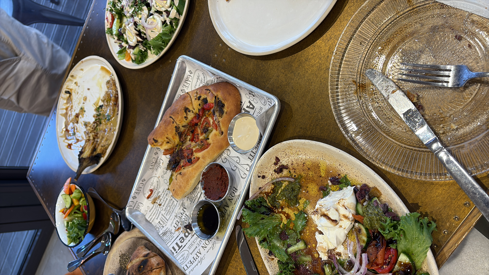

חיסדה היא מקום קטן מאוד בשכונת קריית מנחם בירושלים, צמוד לקריית יובל, בין בתי סוכנות ישנים ומרכזים מסחריים של פעם. ברחוב, באמצע העלייה, עומדת בודקה קטנה עם שלט ענק: חיסדה. כשנכנסתי, שני אנשים אכלו באגטים עם שקשוקה. מאחורי הדלפק ישב לו יצחק — הוא לא בעל הבית, אבל הוא זה שנמצא פה כל יום, מגיש אוכל ומקבל פנים.
חיסדה, מלשון חסד. בדלפק שבכניסה היו המון דברים טובים — ירקות טריים, שקשוקה, טונה, ועוד המון שאפשר להכניס בלחמנייה ירושלמית גדולה. יצחק סיפר שבעל הבית הקים את המקום כי זוכר את עצמו בתור ילד שיורד מבית הספר ולא תמיד היה סנדוויץ' בבית. הוא אמר לעצמו: מה שלי לא היה, אני רוצה לתת לילדי השכונה.

חיסדה
יצחק · קריית מנחם · תרום כפי יכולתך
המקום נועד במיוחד לילדי השכונה שחסר להם. הם באים, אוכלים סנדוויצ'ים אחרי בית ספר. משפחות נזקקות מגיעות. ביום שישי מחלקים דגים, עופות וסלטים לשבת, מאחת עשרה עד שלוש. ואז הסתכלתי על המחירון על הקיר: סנדוויץ' חביתה בלאדי — תרום כפי יכולתך. שקשוקה סבתא — תרום כפי יכולתך. סלט טונה — תרום כפי יכולתך.
ובסוף, גם אם אין — זה בסדר. שזה הכי חשוב, אמר יצחק.
בזמן שדיברנו, לא מעט אנשים הגיעו לאכול. צעירים, מבוגרים. לכולם יצחק חילק מה שביקשו. כולם אכלו בתיאבון, אבל לאו דווקא שילמו. נכנסה אישה עם ילדים. הילדים ביקשו לחמנייה. יצחק נתן להם בחיוך ואמר: תגידי להם שיהיה להם סבבה.
כשהעומס קצת נרגע, יצחק נתן לי עוד מהפילוסופיה של המקום. לא כל מי שיש לו כסף לא אומר שהוא לא זקוק לחום של סנדוויץ', הסביר. יש אנשים שיש להם כסף אבל אין להם אף אחד בעולם. אין מי שיטפל בהם, אין להם את החמימות של האכילה. לשבת, לאכול, לדבר עם אנשי השכונה, לצחוק, להעביר רבע שעה בכיף.
"לא כל מי שיש לו כסף לא אומר שהוא לא זקוק לחום של סנדוויץ'. יש אנשים שיש להם כסף אבל אין להם אף אחד בעולם."
— יצחק, חיסדה format_quote
שאלתי אותו כמה אנשים מגיעים ביום. בממוצע מאתיים לחמניות, מאתיים עשרים לחמניות ביום, ענה. זה המון. שאלתי כמה משלמים. מתוך מאתיים ומשהו ביום, בערך שמונים עד מאה. אבל התשלום, הוסיף, הוא תשלום של שקל שניים. אין קופה רושמת, יש קופת צדקה כחולה שתלויה ליד הכניסה, וכל אחד שם מה שהוא יכול, בלי שיתבייש.
"בממוצע ביום מאתיים לחמניות, מאתיים עשרים לחמניות. ברוך השם, הקב"ה עוזר לנו לעזור להם."
— יצחקנשארתי עוד קצת. מדי פעם נכנסו עוד אנשים, ביקשו לאכול. חלק ניגשו לקופה הכחולה והכניסו כמה שקלים. חלק כלל לא שאלו שאלות, ולאף אחד זה לא נראה מוזר.
מקום אחד קטן, בשכונה אחת קטנה בירושלים, שעושה משהו אחר לגמרי. עושה את העולם קצת יותר טוב, לחמנייה אחרי לחמנייה.